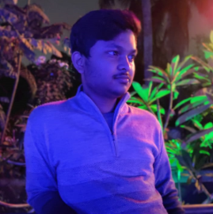

The Team

We are an enthusiastic team of 5 young minds, and 40 motivated individuals from Gambhari who’re looking forward to make a powerful and positive impact starting with basic individualistic steps. We’re extremely zealous about changing the current pollution scenario and inculcating in people, love for mother earth. We’re under the expert guidance and support of team “Barefoot” which is a registered non profit organization, having expertise in volunteerism, social causes and environment care. We’re heading strong, ready to take on challenges.
Shagun Kar
The head of the team, her charismatic enigma can enchant anyone. Straightforward, brave and determined, her resolved mind finds balance in the middle of chaos. Her positive aura and zealous soul keeps the team on their feet at all times. Cheerful and comforting, she is the mitochondria of our cell, providing us energy at all times.
Subhashree Banita
 An extremely energetic individual with strong communication skills, she is an active participant of the movement. She frequently visits and surveys the villages , motivates
our volunteers. Because of her overwhelming friendliness, she tops the list of favourites of our local volunteers.
An extremely energetic individual with strong communication skills, she is an active participant of the movement. She frequently visits and surveys the villages , motivates
our volunteers. Because of her overwhelming friendliness, she tops the list of favourites of our local volunteers.
Sourav Pati
A lively soul and a hardcore believer in teamwork, he drives all our events to success. His love and respect for the local community is his strongest trait. He loves interactive sessions and believes that awareness is the key to change.
Aurobinda Stitapragna
An extremely passionate technogeek , he works his way with computers. He is great at plan b’s and knows exactly what to do when things go wrong. His intellectual and insightful words keep us uplifted and inspired.
Jigyanshu Rout
The logistical mastermind, he takes charge of anything and everything related to technology and computers. An Extremely talented planner and executer, his calm and smart mind gets us through the most challenging situations. His confidence and alluring charm are his key assets in winning every argument.
“We do not have to engage in grand heroic actions to participate in the process of change. Small acts when multiplied by millions of people, can transform the world” - Howard Zinn.